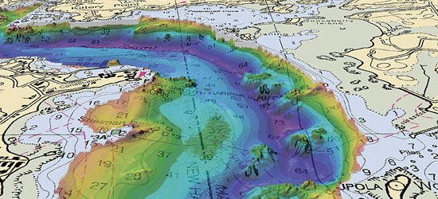
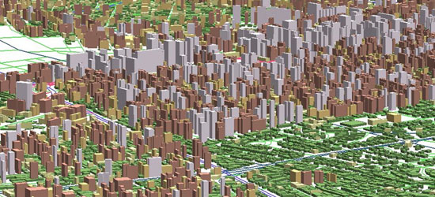
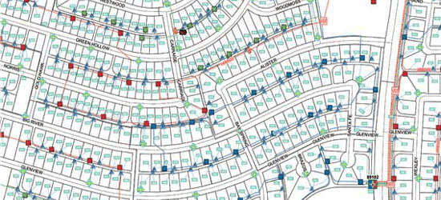
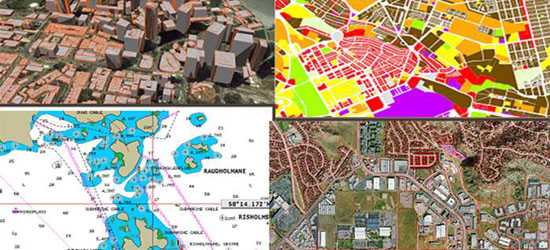
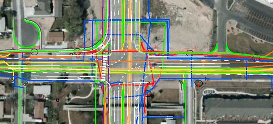

Services with excellence & commitment
Our Geospatial team offers services for the development, implementation, and maintenance of land information systems, including system design, data modeling, data conversion, and data migration. Land mapping solutions are essential for planning and development.
Land Mapping solutions focus on land records and details of their database. These tools support the decision making and analysis.
Remote sensing has enabled mapping, studying, monitoring and management of various resources like agriculture, forestry, geology, water, ocean etc. It has further enabled monitoring of environment and thereby helping in conservation. It has grown as a major tool for collecting information on almost every aspect on the earth. With the availability of very high spatial resolution satellites in the recent years, the applications have multiplied.
Urban planning is one of the main applications of GIS. Urban planners use GIS both as a spatial database and as an analysis and modeling tool. The applications of GIS vary according to the different stages, levels, sectors, and functions of urban planning. With the increase in user-friendliness and functions of GIS software and the marked decrease in the prices of GIS hardware, GIS is an operational and affordable information system for planning. It is increasingly becoming an important component of planning support systems.
GIS helps in In-building Facility Management by providing the information related to every single Asset installed inside the building for any type of MEP services.
The telecommunications industry is changing rapdly,resulting in tough competition and an ever-increasing scope of services offered to customers.Solving the many business problems of a telecmmunications company requires a good understanding of where your customers and facilities exists and information about all those locations.
In today's competitive world,a successful utility must take maximum advanatage of each of its considerable resources,from people to equipment to inforation.Integrating geographic and other corporate data to make maximum use of this valuable asset has become absolutely vital.If one pauses to consider the broad spectrum of utility operations,it is difficult to identify any practices that do not have a spatial element. Equipment ,facilities ,crews, customers, even system events have an aspect that can be associated with a physical location.
A majority of water and wastewater utilities use GIS technology to integrate all kinds of information and applications with a geographic component into one, manageable system.GIS Lets you organize and manage the flow of waste and wastewater to service homes and businesses by tracking the location and condition of water and sewer mains,valves,hydrants, meters storage facilities and manholes.
The GIS system can prove to be of immense significance in traffic operations. This is because incident and traffic direction organizations established on GIS offer numerous advantages for traffic operations managers. In reality GIS is valued significantly for its capability to function with high competence. GIS is competent at incorporating data feeds and apportioning "dashboard" or on-screen positions quickly. This characteristic makes it perfect for acquiring a complete picture of present traffic positions.Transportation direction is a spatial process, it can be handled efficaciously utilizing GIS engineering science.
Our Geospatial team offers services for the development, implementation, and maintenance of land information systems, including system design, data modeling, data conversion, and data migration. Land mapping solutions are essential...
Remote sensing has enabled mapping, studying, monitoring and management of various resources like agriculture, forestry, geology, water, ocean etc. It has further enabled monitoring of environment and thereby helping in conservation...
Urban planning is one of the main applications of GIS. Urban planners use GIS both as a spatial database and as an analysis and modeling tool. The applications of GIS vary according to the different stages, levels, sectors...
GIS helps in In-building Facility Management by providing the information related to every single Asset installed inside the building for any type of MEP services...
The telecommunications industry is changing rapdly,resulting in tough competition and an ever-increasing scope of services offered to customers...
In today's competitive world,a successful utility must take maximum advanatage of each of its considerable resources,from people to equipment...
A majority of water and wastewater utilities use GIS technology to integrate all kinds of information and applications with a geographic component into one...
The GIS system can prove to be of immense significance in traffic operations. This is because incident and traffic direction organizations established on GIS..
Tote bag Brooklyn Bushwick pour-over. Helvetica shabby chic vegan stumptown. Occaecat yr seitan forage. Typewriter lo-fi sartorial.
Tote bag Brooklyn Bushwick pour-over. Helvetica shabby chic vegan stumptown. Occaecat yr seitan forage. Typewriter lo-fi sartorial.
Tote bag Brooklyn Bushwick pour-over. Helvetica shabby chic vegan stumptown. Occaecat yr seitan forage. Typewriter lo-fi sartorial.
Tote bag Brooklyn Bushwick pour-over. Helvetica shabby chic vegan stumptown. Occaecat yr seitan forage. Typewriter lo-fi sartorial.
Tote bag Brooklyn Bushwick pour-over. Helvetica shabby chic vegan stumptown. Occaecat yr seitan forage. Typewriter lo-fi sartorial.
Tote bag Brooklyn Bushwick pour-over. Helvetica shabby chic vegan stumptown. Occaecat yr seitan forage. Typewriter lo-fi sartorial.